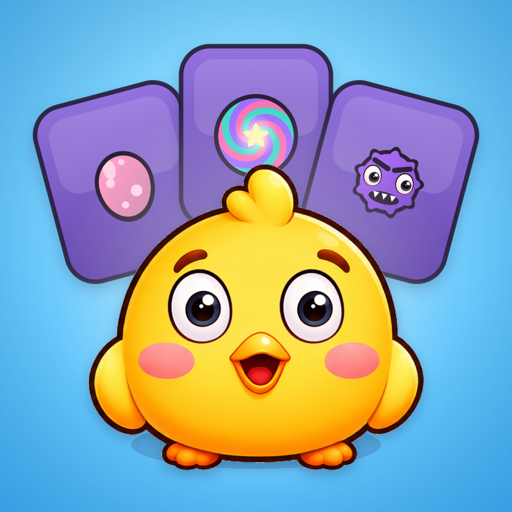
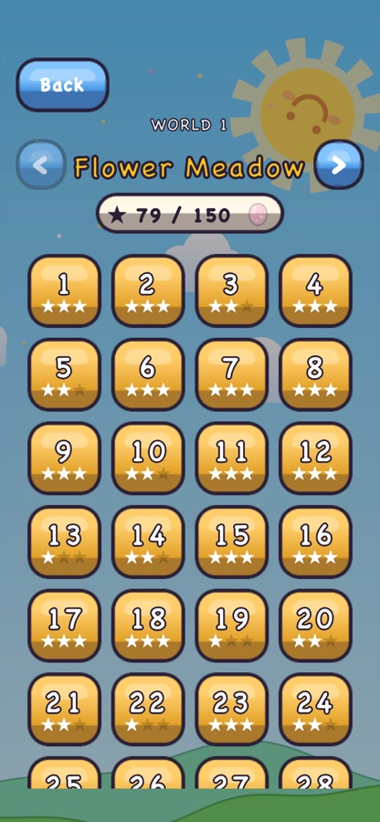
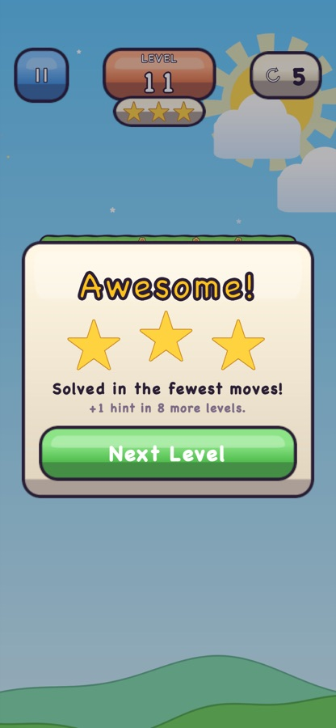
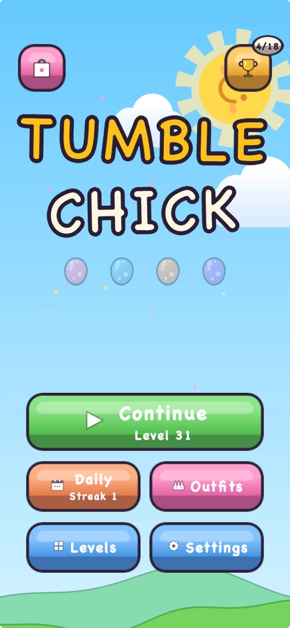

Tumble Chick
Dünyayı döndür, civcivi portala ulaştır! 200 el yapımı yerçekimi bulmacası.



4 dünya, 200 bölüm
Çayır, kar, çöl ve uzay; her dünyanın kendi mekaniği var.
Her gün yeni bulmaca
Herkese aynı, her zaman çözülebilir günlük bulmaca.
Süre yok, enerji yok
Kendi hızında oyna; ipuçlarını oynayarak kazan.